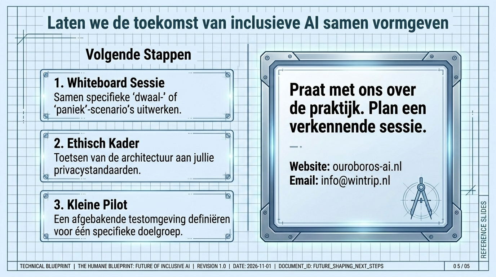

For your parent
Plain help without judgment.
For families
You may be the person they call when the phone acts strangely, the computer freezes, or a warning feels frightening. Ouroboros is made to soften those moments.

The family gap
A parent should not feel ashamed because a device changed again. You should not have to repair every screen from a distance. Ouroboros gives calm help in the moment, with dignity at the center.
Plain help without judgment.
More peace of mind without taking control away.
Support can be discussed around real people, routines, and clear consent.


A gentle introduction
The video remains part of the site, but the message around it is clearer: privacy, dignity, and calm help for ordinary people.
A good first conversation

For families
Tell us what keeps happening.